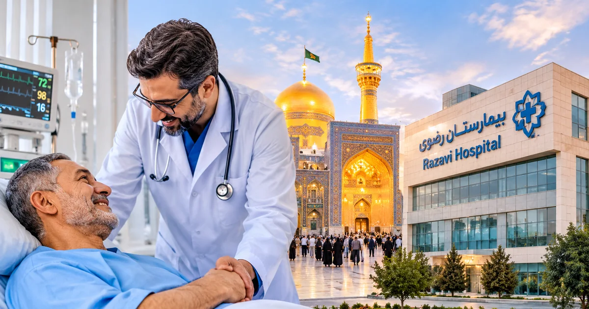

الأورام والسرطان · معلومات قبل السفر
علاج الأورام في مشهد: ما الذي تجهزه قبل التواصل مع المركز؟

إذا كنت تفكر في السفر إلى مشهد لمراجعة طبيب أورام أو لاستكمال علاج بدأته في بلدك، فابدأ بإرسال الملف الطبي إلى مركز مختص قبل حجز التذكرة. يحتاج الفريق المعالج إلى معرفة التشخيص السابق والعلاج الذي تلقيته ونتائج الفحوص الحديثة حتى يحدد ما إذا كان يستطيع تقييم الحالة وما الخطوة التالية.
ما التقارير التي قد يطلبها الفريق الطبي؟
تختلف الوثائق بحسب نوع الورم ومرحلة المتابعة، لكن قد يُطلب تقرير الخزعة والأنسجة والصبغات المناعية، وتقارير التصوير مثل CT أو MRI أو PET-CT، وملخص الجرعات أو الجلسات السابقة، وقائمة الأدوية، والتحاليل الحديثة. اسأل المركز عن الملفات التي يحتاج إليها تحديداً؛ لا تكرر فحوصاً أو تؤخر علاجاً قائماً لمجرد تجهيز السفر.
أسئلة مهمة قبل اختيار المركز
- هل يوجد طبيب أو فريق مختص بنوع الورم محل المراجعة؟
- هل المطلوب رأي طبي ثانٍ أم تقييم لخطة علاج جديدة أم استكمال علاج سابق؟
- هل الدواء أو الإجراء المحدد متاح في المركز وفي فترة السفر؟
- ما الفحوص الإضافية التي قد تُطلب بعد الوصول؟
- كيف تُنظم المتابعة بعد العودة إلى بلدك؟
- من يوضح التكلفة الطبية وما الذي لا يشمله التقدير؟
لا توقف العلاج الجاري من أجل السفر
لا توقف أو تؤخر جلسة علاج أو دواءً موصوفاً ولا تغيّر الجرعة اعتماداً على معلومات عامة أو رسالة من وسيط. أي تعديل في الخطة يجب أن يصدر عن طبيب الأورام الذي يتابع الحالة، وبعد التواصل المباشر مع الفريق الذي سيستقبل المريض.
تحقق من ترخيص استقبال المرضى الدوليين
إذا كنت قادماً من خارج إيران، تحقق من اسم المنشأة في قائمة مراكز IPD التابعة لوزارة الصحة. يذكر الموقع الرسمي لمستشفى رضوي وجود خدمات للمرضى الدوليين وتخصصات في الأورام والعلاج الإشعاعي والطب النووي؛ راجع صفحة المرضى الدوليين في مستشفى رضوي وتأكد من توفر الخدمة التي تحتاجها.
خطط للإقامة والمرافق بعد معرفة مدة الخطة
قد تختلف مدة الرحلة كثيراً بين استشارة واحدة وخطة علاج تتطلب زيارات متكررة. لا تحجز إقامة طويلة أو تذكرة عودة قبل أن يوضح المركز المدة المتوقعة والفحوص المطلوبة. اسأل أيضاً عن الاحتياطات التي يحتاج إليها المريض أثناء التنقل، وما إذا كان يحتاج إلى مرافق أو وسيلة نقل خاصة.
دور حسين في تنظيم الرحلة
يمكنني مساعدتك في الاستفسار عن الإقامة والنقل والتواصل غير الطبي باللغة العربية عند توفر الخدمة. لا أقدم تشخيصاً أو توصية علاجية أو تقديراً طبياً، ولا أضمن قبول الحالة أو توافر دواء أو نتيجة علاج. القرار الطبي والفاتورة الطبية يصدران عن المستشفى والطبيب المختص.
قبل السفر، راجع وثائق السفر للعلاج والاستشارة الطبية عن بُعد ودليل مستشفيات مشهد.
أسئلة شائعة
هل يمكن بدء علاج الأورام فور الوصول؟
لا يمكن افتراض ذلك. يحتاج المركز إلى مراجعة الملف وتحديد ما إذا كانت هناك فحوص أو تقييمات إضافية قبل وضع الخطة.
هل يمكن ضمان توفر دواء معين؟
يجب تأكيد اسم الدواء وتوفره وتكلفته من المستشفى مباشرة قبل السفر.
هل أستطيع تأجيل جلسة العلاج حتى أصل إلى مشهد؟
لا تؤجل أي علاج قائم دون قرار من طبيب الأورام الذي يتابع حالتك.
إذا كنت تفكر في السفر للعلاج، أرسل احتياجك اللوجستي فقط، وسأراجع معك ما يمكن تنسيقه بعد تأكيد المركز الطبي. تواصل مع حسين عبر واتساب